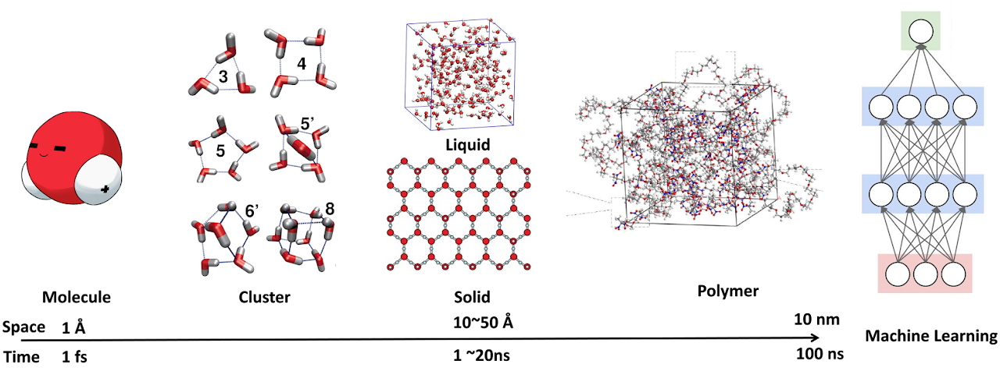

高分子、玻璃態材料與溶劑的介電損耗
研究高分子、玻璃態材料與溶劑系統的介電損耗及相關物理化學問題。
Dielectric lossQUANTUM CHEMISTRY / MOLECULAR DYNAMICS
研究方法涵蓋量子化學、第一原理計算，以及平衡與非平衡分子動力學，用於探討基礎物理化學問題。
3D 模型需要 WebGL 與網路連線。
01 / RESEARCH
研究主題分為下列七個方向。
研究高分子、玻璃態材料與溶劑系統的介電損耗及相關物理化學問題。
Dielectric loss研究催化劑系統中金屬與載體之間的交互作用。
Metal–support interactions研究原子層沉積所涉及的化學物種與反應。
Atomic layer deposition探討有機光電材料的分子設計與相關物理化學問題。
Organic photovoltaics以機器學習方法研究材料結構與性質之間的關係。
Structure–property relations探討溶液系統中的分子交互作用與相關參數。
Solution interactions研究高分子、溶劑與特殊化合物的分子力場開發。
Force-field development
研究室以量子化學、第一原理計算、平衡與非平衡分子動力學探討物理化學問題；結構與性質關係的機器學習亦列於研究方向中。
林子仁副教授任職於國立臺灣科技大學材料科學與工程系。
Hello World！歡迎來到國立臺灣科技大學材料科學與工程系的多尺度模擬與熱力學實驗室。我是實驗室主持人林子仁。我對基礎物理化學問題深感興趣，並透過量子化學、第一原理計算，以及平衡與非平衡分子動力學計算，研究從分子尺度到 50 奈米尺度的問題。我的教學頻道位於 https://www.youtube.com/user/sdd3390。
辦公室：工程一館 E1-101-2 · 實驗室：E1-241-2
03 / PUBLICATIONS
收錄原版研究室網站列示的期刊論文與研討會紀錄。
(Impact Factor: 6.3, Rank 29/179 in Physics, Applied)
(Impact Factor:5.1, Rank 3/31 in Material Science, Ceramics)
(Impact Factor:9.0, Rank 62/439 in Material Science, Multidisciplinary) (Second author: Simulation, Writing, and Discussion)
(Impact Factor:6.2, Rank 33/160 in Physics, Applied) (Co-Corresponding author: Simulation, Writing, and Discussion)
(Impact Factor:2.9, Rank 12/35 in Physics, Atomic, Molecular, & Chemical)
(Impact Factor: 13.3, Rank: 19/161 in Chemistry, Physical) (Second author: Simulation, Writing, and Discussion)
(Third author: Simulation, Writing, and Discussion)
(Impact Factor: 9.965, Rank: 33/165 in Chemistry, Physical) (Second author: Simulation, Writing, and Discussion)
(Impact Factor: 14.511, Rank: 18/165 in Chemistry, Physical) (Second author: Simulation, Writing, and Discussion)
(Impact Factor: 8.128, Rank: 32/162 in Chemistry, Physical) (Second author: Simulation, Writing, and Discussion)
(Impact Factor: 5.715, Rank: 31/265 in Environmental Science) (Second and shared corresponding author: Simulation, Writing, and Discussion)
(Impact Factor: 8.821, Rank: 26/158 in Chemistry, Physical ) (Second author: Simulation, Writing, and Discussion)
(Impact Factor:3.430, Rank 8/37 in Physics, Atomic, Molecular, & Chemical)
(Impact Factor:2.029, Rank 20/37 in Physics, Atomic, Molecular, & Chemical)
(Impact Factor:10.733, Rank 14/148 in Chemistry, Physical) (Second author: Simulation, Writing, and Discussion)
(Impact Factor:4.018, Rank 13/71 in Chemistry, Applied) (Second author: Simulation, Writing, and Discussion)
(Impact Factor:3.567, Rank 9/36 in Physics, Atomic, Molecular, & Chemical)
(Impact Factor:3.069, Rank 66/172 in Chemistry, Multidisciplinary) (Third author: Simulation, Writing, and Discussion)
(Impact Factor:1.449, Rank 26/37 in Physics, Atomic, Molecular, & Chemical)
(Impact Factor:4.123, Rank 6/36 in Physics, Atomic, Molecular, & Chemical)
(Impact Factor:4.536, Rank 31/146 in Chemistry, Physical)
(Impact Factor:4.449, Rank 5/36 in Physics, Atomic, Molecular, & Chemical)
(Impact Factor:4.457, Rank 33/139 in Chemistry, Physical) (Second author: Simulation, Writing, and Discussion)
(Impact Factor:3.377, Rank 102/290 in Biochemistry and Molecular Biology)
(Impact Factor:9.907, Rank 11/154 in Chemistry, Multidisciplinary)
(Impact Factor:3.696, Rank 32/134 in Chemistry, Physical)
(Impact Factor:3.696, Rank 32/134 in Chemistry, Physical)
(Impact Factor:1.167, Rank 83/113 in Chemistry, Physical)
蘇威儒
劉兆恆
林佩蓉
蘇威儒
劉兆恆
林佩蓉
Yang Yi Zheng
Yang Yi Zheng
Jaysen Brian Susanto
Wei-Ru Su
Wan-Feng Kao
Jun-Hao Chang
Min-Hsuan Chang
Yu-Jung Liang
Yu-Jou Lee
找不到符合條件的紀錄，請試試其他關鍵字。
04 / OPEN LEARNING
依領域整理的教學影片與教材。
05 / TUTORIAL RESOURCES
本區收錄林子仁老師舊站提供的計算模擬教學播放清單。
05 / TAKE A BREAK
網站內建元素貪食蛇與元素彈跳球兩項互動遊戲。
依原子序收集元素。方向鍵／WASD 或下方按鈕操作。
先得 5 分獲勝。以滑鼠、手指拖曳，或 W／S 控制左側球拍。
臺北市大安區基隆路四段 43 號